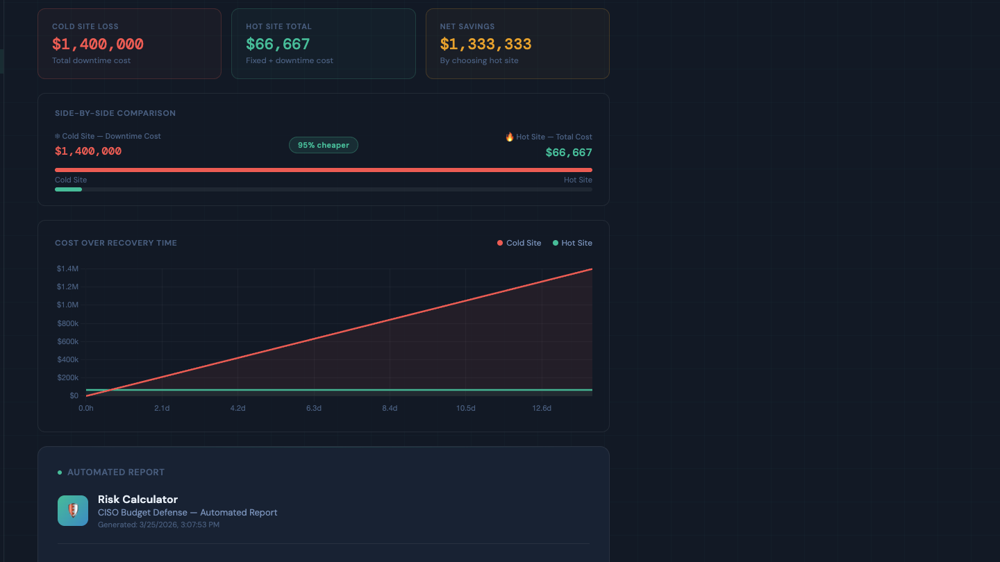
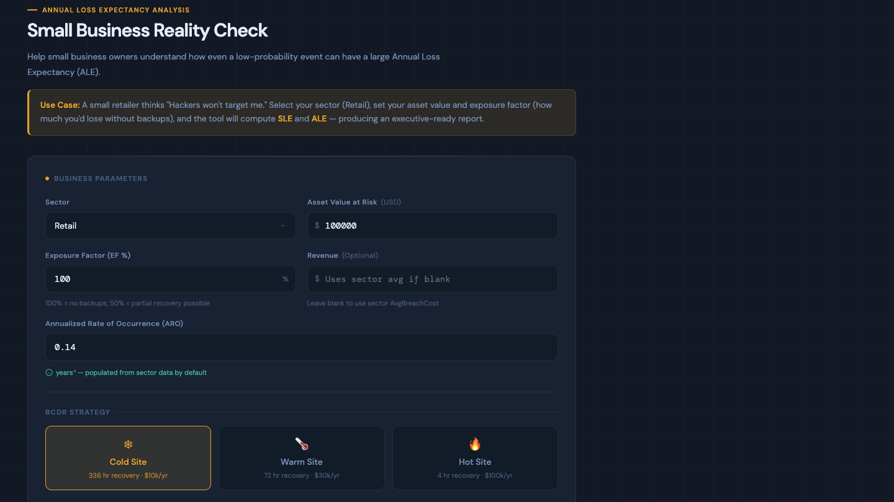
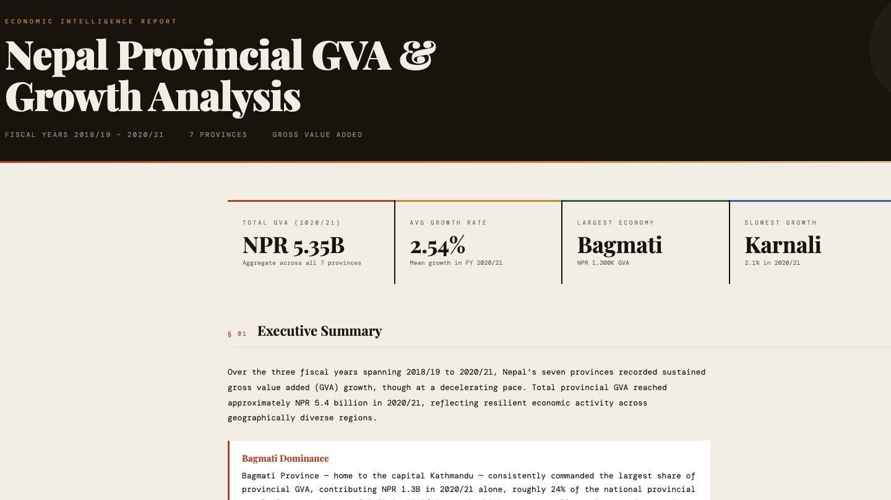
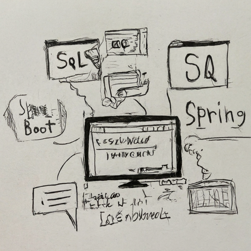

A curated collection of my work in Salesforce CRM development, Java Spring Boot applications, cybersecurity risk tools, and interactive data visualizations. Each project represents real-world problem-solving and measurable business impact.
🔒 Cybersecurity & Risk Management
Executive-grade tools that translate cybersecurity risks into financial metrics

CISO Budget Defense Calculator & Conference Paper
Published conference paper and developed an interactive calculator designed for Chief Information Security Officers (CISOs). This analytical tool compares the total cost of ownership between Cold Site (slower recovery, lower cost) and Hot Site (faster recovery, higher cost) disaster recovery strategies.
Key Features:
- Real-time cost comparison with customizable parameters (RTO, RPO, downtime costs)
- Executive-ready report generation with visual charts and ROI analysis
- Risk quantification translating technical metrics into financial impact
- Evidence-based recommendations for disaster recovery investments
Tech Stack: HTML5, CSS3, JavaScript, Chart.js, Bootstrap

Small Business Reality Check: Annual Loss Expectancy (ALE) Tool
A risk-assessment tool designed specifically for small business owners to understand the tangible financial impact of cybersecurity and operational threats. By translating low-probability, high-impact events into concrete Annual Loss Expectancy (ALE) metrics, this tool provides a crucial "reality check" that drives better security posture and informed investment decisions.
Key Features:
- Interactive ALE calculator with customizable threat scenarios
- Visual risk matrices showing probability vs. impact
- Cost-benefit analysis for security controls and insurance
- Executive summary generation for stakeholder communication
Tech Stack: HTML5, CSS3, JavaScript, D3.js, Bootstrap
📊 Data Visualization Dashboards
Interactive dashboards transforming complex datasets into actionable insights

Election Commission Data Dashboards
A comprehensive suite of interactive dashboards visualizing Nepal's electoral data. These tools transform complex election datasets into intuitive, interactive experiences that help journalists, researchers, and citizens understand voting patterns, candidate distributions, and constituency demographics.
Dashboards Include:
- Election 2082: Candidate listings with party affiliations and constituency details
- Constituency Dashboard: Interactive maps with demographic breakdowns
- Election 2080 Summary: Historical results and trend analysis
Tech Stack: JavaScript, D3.js, Leaflet.js, Chart.js, HTML5, CSS3, JSON

Economic Indicators Dashboard
Interactive visualization of macroeconomic indicators including GDP growth trends over 15 years and Gross Value Added (GVA) sectoral analysis. These dashboards help identify economic patterns, sector contributions, and growth trajectories through dynamic charts and filtering capabilities.
Features:
- 15-year GDP growth trends with year-over-year comparisons
- Sector-wise GVA breakdown with interactive filtering
- Comparative analysis tools for economic research
Tech Stack: JavaScript, Chart.js, D3.js, HTML5, CSS3, JSON
💼 Enterprise Development Projects
Production-grade applications developed in professional enterprise environments. These projects demonstrate my expertise in Java Spring Boot, RESTful API design, and full-stack development.

Digital Wallet Platform (PayMe & AwiPay)
Enterprise-grade digital wallet application serving 100K+ users in Nepal. I developed secure transaction processing systems, implemented spending controls (3 transactions/day via linked cards, 1/day for wallet), and built the intermediary service layer between controllers and data repositories.
Key Contributions:
- Designed and implemented RESTful APIs for transaction processing
- Built service layer encapsulating business logic and data access operations
- Implemented security measures for financial data protection
- Developed transaction controls and spending limits
Tech Stack: Java, Spring Boot, Hibernate, MySQL, REST APIs, Maven
Machine Learning: House Price Prediction System
An end-to-end machine learning system that predicts optimal house prices based on user preferences and market data. The system combines data preprocessing, feature engineering, and a trained regression model served through a user-friendly Flask web interface.
Features:
- Data cleaning and preprocessing pipeline
- Feature engineering for price prediction accuracy
- Interactive web interface for preference input
- Real-time prediction results with explanations
Tech Stack: Python, scikit-learn, pandas, NumPy, Flask, HTML/CSS
💼 Work Experience
Salesforce Developer
CURRENTOffice of Information Technology, UNLV
Aug 2024 – Present
- Designed and delivered Salesforce Sales and Service Cloud solutions using flows, Process Builder, Apex triggers/classes, and Lightning components to streamline workflows for 10+ university departments and improving usability for thousands of students and staff
- Administered roles, profiles, permission sets, public groups, sharing rules, page layouts, record types, dashboards, and reports while leading data import/export and migration strategies using Data Loader and ETL tools to maintain secure and compliant access across UNLV OIT environments
- Managed CRM records for students, employees, and internal departments by ensuring data accuracy across 10,000+ records and enabling reliable reporting to support university-wide operations
- Built integrations with external systems using REST and SOAP APIs, reducing manual data entry and automating key business processes across Salesforce-driven university workflows
- Implemented deployment strategies using change sets and Salesforce DX; maintained CI/CD pipelines with Git and Gearset, accelerating release cycles and reducing deployment errors across environments
Salesforce
Apex
Flow Builder
REST/SOAP APIs
Git & Gearset
Salesforce DX
Java Developer
COMPLETEDThree Monks Pvt. Ltd.
Nov 2020 – Jun 2024 • 3.5 years
- Engineered and optimized Java (Spring Boot) microservices with multithreading and concurrency controls and integrated C++ performance components for critical paths, supporting 4,000+ daily transactions and 800+ concurrent users, reducing average response time by 18%
- Designed and implemented 12+ secure RESTful APIs integrated with Android applications (SDK-level interactions) and Linux based backend services, improving transaction success rate by 15% and ensuring consistent data integrity
- Diagnosed and resolved 30+ production issues in Linux environments using log analysis and crash debugging, leveraging Git workflows, TDD, and automated testing, reducing production defects by 25% and improving release stability
- Collaborated with cross-functional teams to build and optimize Android-facing features interacting with backend microservices and Linux based systems, contributing to 8+ feature releases and improving overall application performance by 12% through efficient API designing and system tuning
Java Spring Boot
C++
REST APIs
Android SDK
Linux
TDD & Git
Hibernate
MS in Management Information Systems
IN PROGRESSUniversity of Nevada, Las Vegas
Aug 2024 – Present
Bachelor's in Information Management
Nepal
2017 – 2022
Let's Build Something Together
I'm actively seeking full-time Software Engineering and Salesforce Development opportunities. My unique blend of enterprise Java development, CRM automation, and AI experimentation positions me to drive immediate impact.